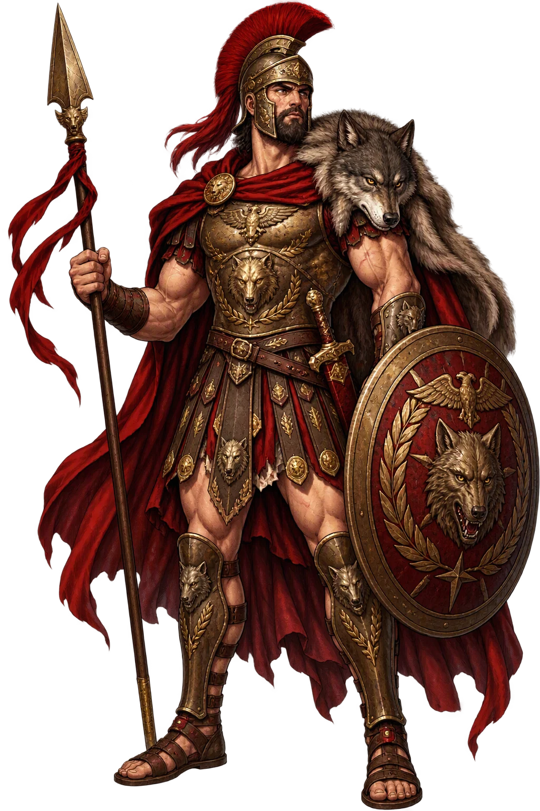
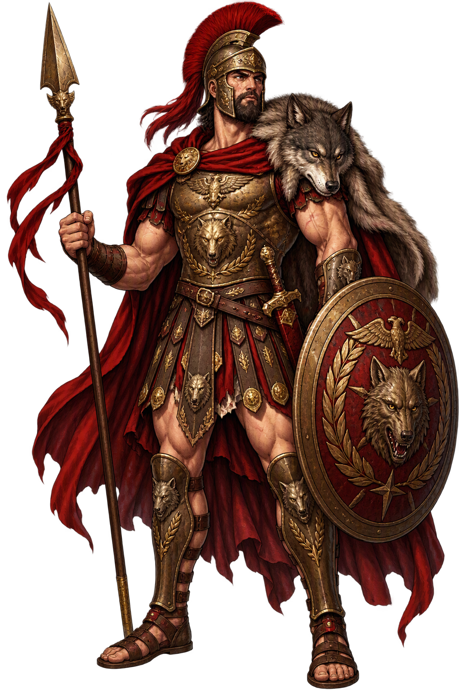

Stories of Mārs
Mārs enters myth almost entirely as a father — and what he fathers is the city. His stories are told by Rome's historians, not by its Homer, and they all serve one thesis: that Roman power is divine in origin and therefore answerable to ritual. The Vestal and the she-wolf, the shield from heaven, the old king fooled at a wedding: each myth is a charter for a piece of the state cult.
Livy opens the Roman story with a vestal crime that is really a divine plan (1.3–4). Numitor, rightful king of Alba Longa, is deposed by his brother Amulius, who forces Numitor's daughter, the Vestal Rhea Silvia, into perpetual virginity so the line cannot challenge him. But the girl, sent to fetch water for a sacrifice, is overpowered in the sacred grove by the god — or so she swears, 'by the god himself, she said that Mars was the author of her seized virginity' — and bears twin boys. Amulius orders them drowned in the Tiber; the river is in flood, the basket grounds at the fig-tree Ruminalis, and a she-wolf comes down from the hills to nurse them in the cave of the Lupercal, while a woodpecker flies food to the infants. The shepherd Faustulus finds them; his wife Acca Larentia raises them; and the twins grow up to restore Numitor and found a city of their own on the Palatine. Livy reports the whole wonder-story and then, with the honesty that makes him Rome's first historian, adds that he gives it as it has come down, 'more adorned with poetry than burdened by proof.' The myth needs no proof: it explains why the war god's temple stands at the heart of the city his sons built.
In Numa's peaceful reign — the king who talked Jupiter himself out of human sacrifice with a handful of meal and onions — a shield fell from the sky, the ancile, with a promise that Rome's fate hung upon it. The problem was theft: one true shield, an empire to protect, and every enemy a potential thief. So the king set the cunning smith Mamurius Veturius a test he could not be told about — make eleven copies so exact that even Numa could not pick the divine original — and the twelve ancilia were entrusted to the Salii, the 'leapers,' priests of Mars who danced through the city each March bearing the shields on their left arms and singing a carmen so ancient that even Augustus's scholars confessed they could barely construe it. The smith who made them was driven out, or stoned, or honored — the versions disagree, and Ovid is visibly embarrassed by the tradition — but the ancilia stayed, and were still being carried when the empire was Christian. Mars's shield, like Rome itself, was a copy indistinguishable from the original; that was the whole point.
The greatest Mars myth is not archaic at all — it is Augustan, and paid for in blood. After Caesar's murder the nineteen-year-old Octavian marched with Antony against the Liberatores, and at Philippi in 42 BC Brutus and Cassius fell, one by the sword, one by his own hand. Octavian had vowed a temple to Mars the Avenger — Mars Ultor — if he should win, and forty years later, in 2 BC, he dedicated it in his new Forum, flanked by colossal statues of the god in crested helmet, spear grounded, breastplate crowded with myth. The temple held the sword of the murdered Caesar and the standards recovered from the Parthians — Crassus's lost eagles finally retrieved by diplomacy and displayed as war won. Ovid, who was there, makes the dedication Rome's birthday party (Fasti 5.545–598): the new theater, the games, the imperial family on the podium, and Mars's godhead finally visible — for until the temple rose, the Romans admitted, no image of Mars had any reliable claim to show what the god looked like. The myth is exactly as blunt as its name: the man who avenged the father became the son of a god, and Mars was the instrument.
Ovid is the only source, and he is delighted to be it (Fasti 3.523–710). Old Mars, he says, had fallen in love — with the warlike maiden Ana Perenna? No: with Minerva herself, who with a goddess's perfect tact referred him onward: 'you are old; she is young' — go woo Anna, 'the years' own goddess.' Anna knew what the old god was after and, on their wedding night, wrapped herself in a veil, went to the bedroom in the dark, and — had placed the aged crone in the bed instead. When Mars at last lifted the veil by the lamp's light, the laugh was heard all over heaven, and Anna was raised to the skies as the river of years. The story is the Fasti's gift to Mars: the most ferocious of the gods made ridiculous by age and desire, and answered not with thunder but with a practical joke — Roman humor at the war god's expense, told in the month of his festival.
In Virgil's Aeneid Mars does for the losing side what he never does for Rome: he loves it. His favorite is Turnus, the Rutulian prince who defends Italy against the Trojan landing, and the god moves through the last books like a pressure behind the war: he sends Allecto, the Fury, to kindle the conflict in Book 7; he strikes Turnus with a courage beyond his own when the prince pursues a phantom Aeneas onto a ship and is carried helpless from the field in Book 9; and in Book 12, when the treaty breaks, Mars arms him for the last duel. Yet Jupiter has already weighed the fates, and not even the war god's advocacy moves the scale. Mars rages; fate is silent and exact. The scene is the Aeneid's quiet commentary on the god Rome trusted most: Mars can arm a hero, but he cannot assign the victory — and when Rome itself is at stake, the poet reminds us, the god of war fights on the other side too.
War, Agriculture, Sovereignty
Mārs is the god the Greeks would not have recognized. Where Árēs is battle-lust and gets laughed off Olympus, Mārs is war as a Roman office — disciplined, auspicious, and owed to the state: the spear that stands in the Regia and moves when the res publica marches. But he is also the god of the field itself — of boundaries and crops and the spring lustration — and the father of Rōmulus and Rēmus, which makes him the only great god who is literally Rome's ancestor.
Roman war under auspice and command — the legion, not the brawl. Mars receives victory owed, not rage indulged; Cicero allows war only ever to be waged to live in peace.
The field-god who keeps boundaries and crops: Cato's farmers purify the land with a prayer to Mars before the plough, and the Arval Brethren still dance for him at their grove.
By the Vestal Rhea Silvia he fathers Rōmulus and Rēmus; the she-wolf nurses them at the Lupercal, and from Romulus the city takes both its king and its name.
'Mars the Avenger' — vowed by the young Octavian before Philippi, paid with the greatest temple of the age, dedicated 2 BC in the Forum of Augustus.
From the original script to the living URL
Mārs
The name survives only in scholarly transliteration. Mārs is the standard Roman romanisation, documented in academic sources — “The Roman god of war and guardian of agriculture, father of Rōmulus and Rēmus; namesake of the planet Mars and the month of March (epigraphic MARS)”. Its macron-length vowels preserve distinctions lost in plain ASCII.
The original script for this roman name has not yet been added to PUNICODEX. The form shown is a scholarly transliteration.
mars
Reduced to plain mars, the name loses everything that made it specific: macron-length vowels. What remains is an ASCII string that machines can parse but that no longer speaks with its original voice.
Mārs
The Unicode restoration recovers what ASCII flattened. Mārs restores macron-length vowels, returning the name to its original written dignity. The domain encodes to Punycode, but the browser displays the truth.
Mārs.com → xn--mrs-1oa.com
The non-ASCII characters in Mārs are encoded while the ASCII remains visible. To the DNS, it is Punycode. To humanity, it is Mārs.
Owned, ideal, and ASCII forms of Mārs
Mārs
The live temple domain — mārs.com.
mars
The plain ASCII fallback — what DNS and legacy systems see.
How Mārs was spoken
How Mārs is preserved in writing
A bespoke provenance study for Mārs is being prepared by the PUNICODEX scholarly team.
Contribute scholarly provenance →The lore you have read is the living myth. Extended Lore opens the scholarly vault beneath it: the cult and its material remains, a history of the image, the name after antiquity, a meditation on what the name still means, and the full scholarly apparatus — etymology, orthography, sources.
Enter Extended Lore